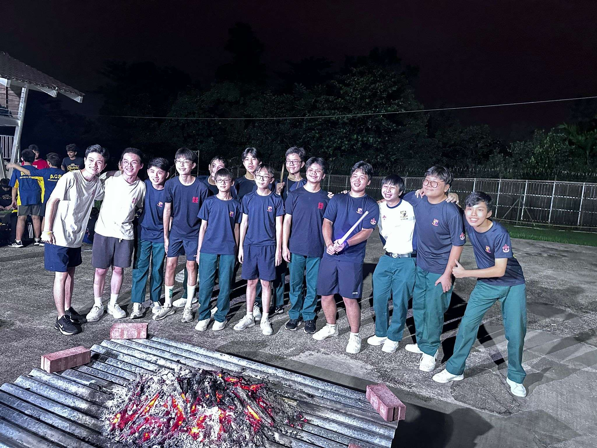

Below, I will have photos of my achievements and programmes I have been a part of, some CCA, some outside of school. I will also be sharing a bit about my experience in doing them.
The first (and so far only) capture the flag I participated in! In Singapore Poly, I learned about ethical hacking and how CTF works.
My School teacher organised for us to attend this CTF, and it was a great experience, and brought my intrest further into learning about how computers work, coding, website cookies and such.

Below, I will put my scouts Achievements!
First, badges!
Discoverer Award: This badge required me to reflect on the National Pledge and how I live out its values in daily life. I also engaged in peer learning by interviewing a Scout who had participated in an international exchange. This helped me gain insight into global Scouting culture and deepened my understanding of national identity, friendship, and citizenship.
Jobman Badge: The Jobman badge equipped me with essential practical life skills through hands-on tasks such as replacing a tap washer, repairing door hinges, patching garments, and responding to a burst water pipe. Completing this badge taught me to be self-reliant, resourceful, and confident in handling common household repairs, key skills in both everyday life and Scouting.
First Aider Badge: I earned this badge by qualifying for a certified first aid course conducted by either the Singapore Red Cross or St. John Ambulance. It involved both theoretical learning and practical demonstrations of life-saving techniques such as CPR, wound care, and emergency response. This training prepared me to remain calm under pressure and to act quickly and responsibly during emergencies.
Craftsman Badge: Although initially pottery-based, this badge was awarded based on our Scout troop's soap-making project, where we used cold process methods. I learned about chemical reactions, safety in handling materials, and the importance of technique and precision. This creative experience also emphasized patience, attention to detail, and working with tools effectively.
Patrol Leader: As a Patrol Leader, I was responsible for guiding and supporting my patrol in both daily troop activities and larger events. This role required planning, delegation, and communication, as well as setting a good example for others. Leading with the Scout motto “Be Prepared,” I learned how to stay calm under pressure, motivate others, and uphold the values of integrity and service.
I have also done many events, organised by my Scout leaders and fellow scouts!
Scout Leadership Course (SLC): in secondary 2, This leadership camp involved rigorous outdoor activities such as tent pitching, outdoor cooking, and navigation. We learned how to lead teams, make decisions in dynamic environments, and manage resources effectively. The experience pushed me beyond my comfort zone and helped me grow in confidence, discipline, and leadership under pressure.
Community Service (Elderly Homes): Over the years, I've participated in many VIA activities, but the ones that stuck with me the most, were visiting Elderly homes! I visited two elderly homes, where I taught residents origami and paracord crafts and sang songs with my fellow Scouts. These visits were meaningful opportunities to give back to the community. They taught me empathy, communication with the elderly, and the joy of brightening someone’s day through small acts of kindness.
International Cultural Exchange (Hong Kong): in secondary 3, at the end of the year, I was selected to represent my troop in a cultural exchange with Scouts in Hong Kong. This immersive experience allowed me to learn about Hong Kong’s heritage and build friendships with Scouts from a different background. It fostered cultural appreciation, adaptability, and communication skills in a global setting.
Secondary 1 recruit camp: in secondary 4, in March, we helped out in a camp for the secondary 1s, to show them what our school spirit was all about. Me and the other scouts set up a campfire to put on a play when it was the night, and below is the aftermath of it!
This is us extinguishing the fire!
I also managed to take this photo!
I hope to make many more memories in the future in this course, with new friends, and to make good ones!!
Contact Lucas
My email address is lil.smol.cat.2@gmail.com